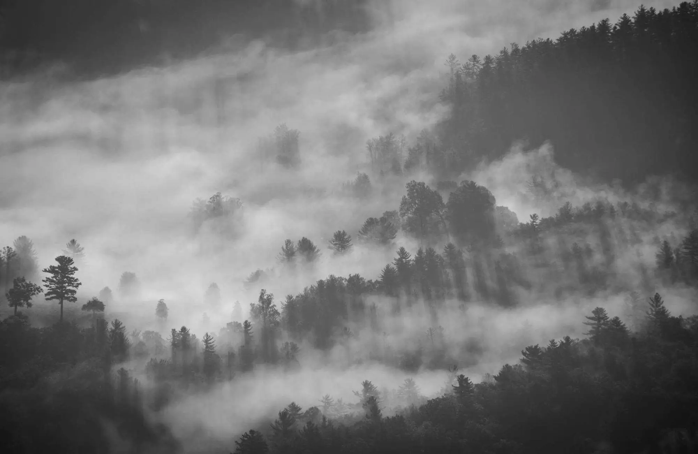

A quiet archive of light
凝视，光落下的地方。
关于自然、城市与时间的摄影练习。
每一帧，都是喧嚣之外的一次停留。
01
Featured story
本期展览 · SEPTEMBER 2026
万物沉默时，
风景才开始说话。
摄影不是解释世界，而是在它经过时，留下一点尚未消失的证据。我们收集那些安静、模糊、无法重复的片刻。
01 / 12
FIELD NOTES / 001
Quiet Crossing
水面没有答案，只有一条通往远方的线。
- 地点
- Alberta
- 年份
- 2026
- 系列
- Solitude
CURATED SELECTION / 2024—2026
Selected Works
十个片段，组成一段关于距离、尺度与凝视的叙事。
“我拍摄的不是眼前所见，
而是目光离开后，仍然留下的东西。”
03
About the archive
在光与时间之间，
寻找安静的秩序。
QURU RUI 是一个持续生长的个人摄影档案。作品游走于自然景观、城市边缘与偶然相遇之间，关注空间如何改变人的感受。
当前页面为作品展示版本。关于项目、纸质收藏与合作计划，将在下一阶段逐步开放。
hello@quruirui.com ↗